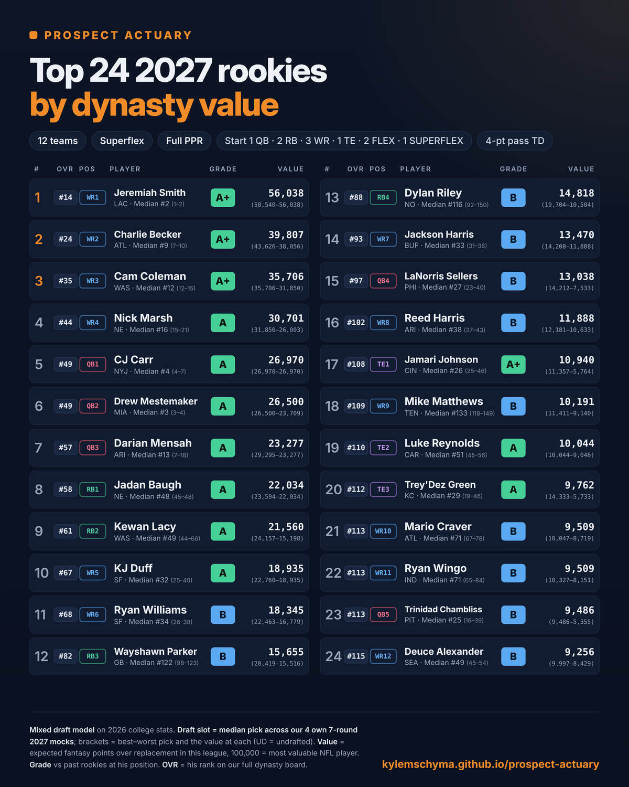

The 2027 class ranked by dynasty value, rookie-draft rounds 1-2 (12 picks a round): grade, positional rank and where our mock drafts have each player going.

Jeremiah Smith leads the class at 56,038. Top QBs: Carr, Mestemaker, Mensah. Jamari Johnson is the TE1 (A+) at #17 by value. Full size
| # | Player | School | Pos | Grade | Value | Mock pick |
|---|---|---|---|---|---|---|
| 1 | Jeremiah Smith | Ohio State | WR1 | A+ | 56,038 | 2 (1–2) |
| 2 | Charlie Becker | Indiana | WR2 | A+ | 39,807 | 9 (7–10) |
| 3 | Cam Coleman | Texas | WR3 | A+ | 35,706 | 12 (12–15) |
| 4 | Nick Marsh | Indiana | WR4 | A | 30,701 | 16 (15–21) |
| 5 | CJ Carr | Notre Dame | QB1 | A | 26,970 | 4 (4–7) |
| 6 | Drew Mestemaker | Oklahoma State | QB2 | A | 26,500 | 3 (3–4) |
| 7 | Darian Mensah | Miami (FL) | QB3 | A | 23,277 | 13 (7–18) |
| 8 | Jadan Baugh | Florida | RB1 | A | 22,034 | 48 (45–48) |
| 9 | Kewan Lacy | Mississippi | RB2 | A | 21,560 | 49 (44–66) |
| 10 | KJ Duff | Rutgers | WR5 | A | 18,935 | 32 (25–40) |
| 11 | Ryan Williams | Alabama | WR6 | B | 18,345 | 34 (26–38) |
| 12 | Wayshawn Parker | Utah | RB3 | B | 15,655 | 122 (98–123) |
| 13 | Dylan Riley | Boise State | RB4 | B | 14,818 | 116 (92–150) |
| 14 | Jackson Harris | LSU | WR7 | B | 13,470 | 33 (31–38) |
| 15 | LaNorris Sellers | South Carolina | QB4 | B | 13,038 | 27 (23–40) |
| 16 | Reed Harris | Arizona State | WR8 | B | 11,888 | 38 (37–43) |
| 17 | Jamari Johnson | Oregon | TE1 | A+ | 10,940 | 26 (25–46) |
| 18 | Mike Matthews | Tennessee | WR9 | B | 10,191 | 133 (118–149) |
| 19 | Luke Reynolds | Virginia Tech | TE2 | A | 10,044 | 51 (45–56) |
| 20 | Trey'Dez Green | LSU | TE3 | A | 9,762 | 29 (19–46) |
| 21 | Mario Craver | Texas A&M | WR10 | B | 9,509 | 71 (67–78) |
| 22 | Ryan Wingo | Texas | WR11 | B | 9,509 | 71 (65–84) |
| 23 | Trinidad Chambliss | Mississippi | QB5 | B | 9,486 | 25 (16–39) |
| 24 | Deuce Alexander | Mississippi | WR12 | B | 9,256 | 49 (45–54) |
Updated November 24, 2026 (2026 stats through week 11; mixed draft model; 12 teams, superflex, PPR, 2 RB / 3 WR / 1 TE, 2 FLEX). Value = expected fantasy points over replacement on our 100,000 scale. Mock pick = median pick across our own 7-round 2027 mocks, with best and worst pick in brackets. This image is rebuilt each Wednesday after the weekly refresh. Ranks 25-48 are on 2027 rookies, rounds 3-4. The live, league-adjustable board is in the 2027 mock draft section, and pick values are on Rookie-pick values.